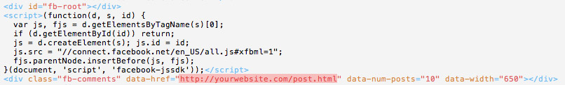
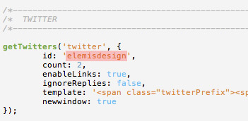
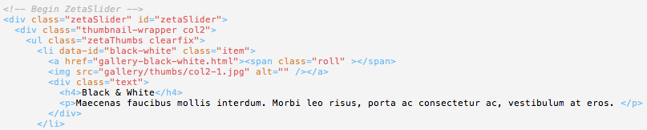
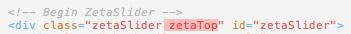
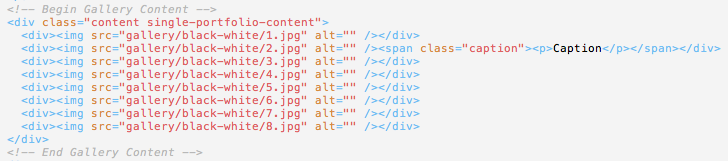
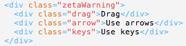
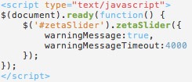
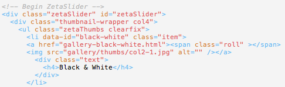

In the post.html file you need to change the page URL with your own URL for the Facebook Comments to work:
To pull your latest tweets in the Twitter widget, open style/js/scripts.js and enter your username on line 16:
To receive the messages sent through the contact forms, open up contact/form-handler.php and edit line 5:
$emailto = 'yourname@yourdomain.com';
For SMTP support edit line 4. Set to "1" if you want to use SMTP to send the email. Default is "0", which uses the standard PHP mail function.
$use_smtp = '1';
If using SMTP you will also need to fill in the 4 SMTP variables - lines 64 - 67.
$SmtpServer = 'SMTP SERVER'; $SmtpPort = 'SMTP PORT'; $SmtpUser = 'SMTP USER'; $SmtpPass = 'SMTP PASSWORD';
For the fonts @font-face is being used. You can generate different font-face kits via http://www.fontsquirrel.com/fontface/generator and replace the existing fonts. Here's a good tutorial on working with @font-face: link
Media queries are included in style/css/media-queries.css for responsive design. If you would like to disable the responsiveness you can remove the link of this css file from the html files.
The template includes 22 social icons.
Portfolio layout I (index.html) has 2 columns of thumbnails with item titles and descriptions.
Here's the basic structure of the thumbnail wrapper in this layout:
data-id is for generating hash tag for each item.
With anchor link you are linking to the gallery html file.
And lastly the image is the item thumbnail.
If you would like to display the gallery slider above the thumbnails then you should add "zetaTop" class to the zetaSlider div, as follows:
Here's the basic structure of the gallery in gallery html file:
Captions should be included in
<span class="caption"><p>Caption text</p></span>
The gallery html files should be in the root with the rest of the html files. You can include the gallery images in a folder. Please make sure the image and gallery html file paths are correct.
You can change the warning message by editing the following:
You can also disable the warning message by changing 'true' with 'false' or by change the warning message timeout in the script at the bottom of the html file:
Portfolio layout II (index2.html) has 4 columns of thumbnails with item titles and descriptions.
Here's the basic structure of the thumbnail wrapper in this layout:
data-id is for generating hash tag for each item.
With anchor link you are linking to the gallery html file.
And lastly the image is the item thumbnail.
If you would like to display the gallery slider above the thumbnails then you should add "zetaTop" class to the zetaSlider div, as follows:
Here's the basic structure of the gallery in gallery html file:
Captions should be included in
<span class="caption"><p>Caption text</p></span>
The gallery html files should be in the root with the rest of the html files. You can include the gallery images in a folder. Please make sure the image and gallery html file paths are correct.
You can change the warning message by editing the following:
You can also disable the warning message by changing 'true' with 'false' or by change the warning message timeout in the script at the bottom of the html file: